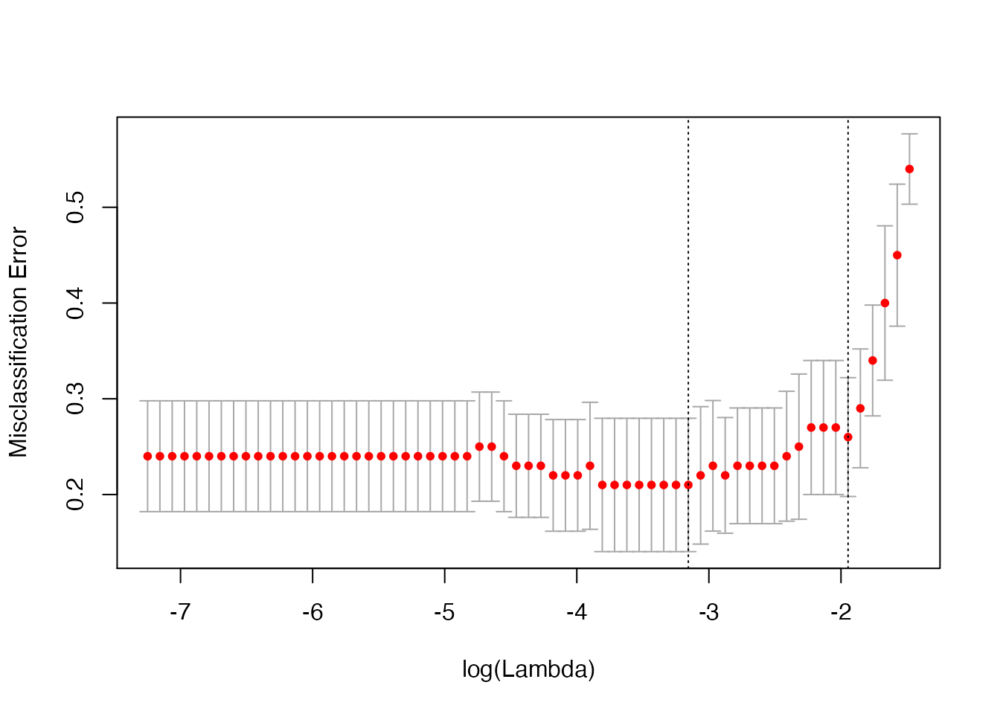

computeError
computeError.RmdThe main function in the cvwrapr package is kfoldcv which performs K-fold cross-validation (CV). It does so in two parts: (i) computing the out-of-fold predictions, then (ii) using the resulting prediction matrix to compute CV error. The computeError function is responsible for the second task and is exposed to the user as well. (For those familiar with the glmnet package, computeError is similar in spirit to the glmnet::assess.glmnet function.) Sometimes you may only have access to the out-of-fold predictions; in these cases you can use computeError to compute the CV error for you (a non-trivial task!).
Let’s set up some simulated data:
set.seed(1)
nobs <- 100; nvars <- 10
x <- matrix(rnorm(nobs * nvars), nrow = nobs)
y <- rowSums(x[, 1:2]) + rnorm(nobs)
biny <- ifelse(y > 0, 1, 0)The code below performs 5-fold CV with the loss function being the default (deviance):
library(glmnet)
library(cvwrapr)
foldid <- sample(rep(seq(5), length = nobs))
cv_fit <- kfoldcv(x, biny, family = "binomial",
train_fun = glmnet, predict_fun = predict,
train_params = list(family = "binomial"),
predict_params = list(type = "response"),
foldid = foldid, keep = TRUE)
plot(cv_fit)The plot above is for binomial deviance. If we want the misclassification error for the out-of-fold predictions, we can compute it with computeError:
misclass <- computeError(cv_fit$fit.preval, biny, cv_fit$lambda, foldid,
type.measure = "class", family = "binomial")
misclass$cvm
#> [1] 0.54 0.45 0.40 0.34 0.29 0.26 0.27 0.27 0.27 0.25 0.24 0.23 0.23 0.23 0.23
#> [16] 0.22 0.23 0.22 0.21 0.21 0.21 0.21 0.21 0.21 0.21 0.21 0.23 0.22 0.22 0.22
#> [31] 0.23 0.23 0.23 0.24 0.25 0.25 0.24 0.24 0.24 0.24 0.24 0.24 0.24 0.24 0.24
#> [46] 0.24 0.24 0.24 0.24 0.24 0.24 0.24 0.24 0.24 0.24 0.24 0.24 0.24 0.24 0.24
#> [61] 0.24 0.24 0.24The output returned by computeError has class “cvobj”, and so can be plotted:
plot(misclass)
To see all possible type.measure values for each family, run availableTypeMeasures():
availableTypeMeasures()
#> $gaussian
#> [1] "deviance" "mse" "mae"
#>
#> $binomial
#> [1] "deviance" "class" "auc" "mse" "mae"
#>
#> $poisson
#> [1] "deviance" "mse" "mae"
#>
#> $cox
#> [1] "deviance" "C"
#>
#> $multinomial
#> [1] "deviance" "class" "mse" "mae"
#>
#> $mgaussian
#> [1] "deviance" "mse" "mae"
#>
#> $GLM
#> [1] "deviance" "mse" "mae"family = "cox", type.measure = "deviance" and grouped = TRUE
There is one special case where computeError will not be able to compute the CV error from the prediction matrix, and that is when we set the options family = "cox", type.measure = "deviance" and grouped = TRUE.
Let’s set up a survival response and perform cross-validation with the error metric being the C-index:
library(survival)
survy <- survival::Surv(exp(y), event = rep(c(0, 1), length.out = nobs))
cv_fit <- kfoldcv(x, survy, family = "cox", type.measure = "C",
train_fun = glmnet, predict_fun = predict,
train_params = list(family = "cox"),
predict_params = list(type = "response"),
foldid = foldid, keep = TRUE)
plot(cv_fit)Now, let’s say we want to compute the deviance arising from these predictions instead. We might call computeError as below:
deviance_cvm <- computeError(cv_fit$fit.preval, survy, cv_fit$lambda, foldid,
type.measure = "deviance", family = "cox")
#> Error in computeRawError.cox(predmat = structure(c(1.10193324574736, 0.974785686160556, : predmat needs 'cvraw' attribute for family='cox', type.measure='deviance' and grouped=TRUE; can be obtained via buildPredMat()That threw an error. What happened? In this special case of family = "cox", type.measure = "deviance" and grouped = TRUE (grouped = TRUE is the default for computeError), we actually need more than just the out-of-fold fits to compute the deviance. In this setting, deviance is computed as follows: for each fold,
As you can see from the above, we need both in-fold and out-of-fold predictions for each of the CV model fits. The way out is to call kfoldcv with type.measure = "deviance". Internally, kfoldcv calls buildPredMat which computes a cvraw attribute and attaches to the prediction matrix. computeError uses this cvraw attribute to compute the deviance.
cv_fit2 <- kfoldcv(x, survy, family = "cox", type.measure = "deviance",
train_fun = glmnet, predict_fun = predict,
train_params = list(family = "cox"),
predict_params = list(type = "response"),
foldid = foldid, keep = TRUE)
plot(cv_fit2)This is a edge case that we don’t expect to encounter often.
This problem is not faced when family = "cox", type.measure = "deviance" and grouped = FALSE. This is because computing deviance in this case only requires out-of-fold predictions: for each fold,
deviance_cvm <- computeError(cv_fit$fit.preval, survy, cv_fit$lambda, foldid,
type.measure = "deviance", family = "cox",
grouped = FALSE)
plot(deviance_cvm)